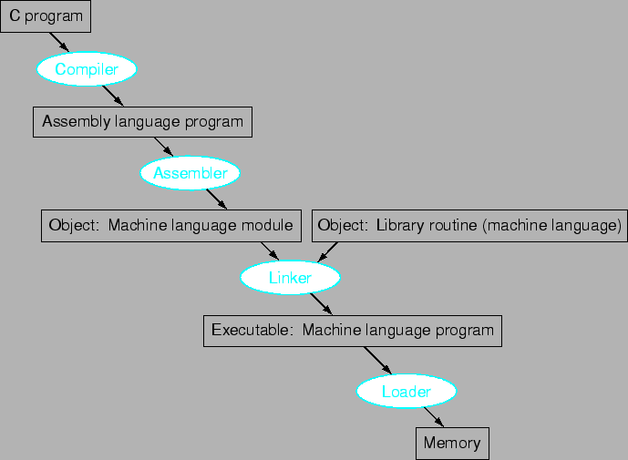

Next: ฟังก์ชั่นการเรียงลำดับเลข
Up: คำสั่ง: ภาษาของคอมพิวเตอร์
Previous: คำสั่งอื่นๆ ของ MIPS
Contents
Index
รูป 2.10 แสดงขั้นตอนในการแปลภาษาตามลำดับขั้นต่างๆ ในการใช้งาน
Figure 2.10:
ขั้นตอนของการแปลภาษา C: เริ่มจากแปลจากภาษาระดับสูงลงไปเป็นภาษาแอสแซมบลี และจากภาษาแอสแซมบลีเป็น object module ในภาษาเครื่อง ตัว linker จะเป็นตัวเชื่อมโมดูล และ ไลบราลี่ต่างๆ เข้าด้วยกัน เพื่อจัดการเรื่องตัวแปร และการอ้างอิงถึงค่าต่างๆ ตัว loader จะเป็นตัวหาส่วนของหน่วยความจำที่เหมาะสม เพื่อทำการประมวลผลต่อไป
|

|
ซึ่งมีส่วนประกอบสำคัญได้แก่
- Compiler
- Assembler
- Linker
- Loader
แนวคิดที่สำคัญที่ใช้กันมากอีกอันหนึ่งได้แก่ Dynamic Linked Library
Subsections
Vara Varavithya
2005-08-18